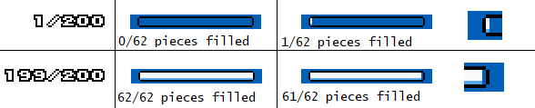

|  A comparison between not having “rounding away” and having rounding away when displaying values close to 0% and 100%
on a 62-pieced bar (3 pieces for both ends, and 7 middle tiles with 8 pieces each: |
!Scratchram_GraphicalBar_LeftEndPiece: $03 !Scratchram_GraphicalBar_MiddlePiece: $08 !Scratchram_GraphicalBar_RightEndPiece: $03 !Scratchram_GraphicalBar_TempLength: $07 ;TotalPieces: 3 + (8*7) + 3 = 62 pieces (the maximum) in the whole bar. ;!Scratchram_GraphicalBar_FillByteTbl+2: Holds the 16-bit number $00C8 (200 in decimal). ;Testing various values (16-bit) stored in !Scratchram_GraphicalBar_FillByteTbl results in these values: 0*62/200 = 0.00 pieces filled → round to 0 (Y=$00) - A truly empty bar 1*62/200 = 0.31 pieces filled → round to 0 (Y=$01) 2*62/200 = 0.62 pieces filled → round to 1 (Y=$00) 3*62/200 = 0.93 pieces filled → round to 1 (Y=$00) 4*62/200 = 1.24 pieces filled → round to 1 (Y=$00) ;... 195*62/200 = 60.45 pieces filled → round to 60 (Y=$00) 196*62/200 = 60.76 pieces filled → round to 61 (Y=$00) 197*62/200 = 61.07 pieces filled → round to 61 (Y=$00) 198*62/200 = 61.38 pieces filled → round to 61 (Y=$00) 199*62/200 = 61.69 pieces filled → round to 62 (Y=$02) 200*62/200 = 62.00 pieces filled → round to 62 (Y=$00) - A truly full bar 201*62/200 = 62.31 pieces filled → round to 62 (Y=$00) 202*62/200 = 62.62 pieces filled → round to 63 (Y=$00) - will still display 62/62 in the table (capped), but filled amount is still 63. |
JSL GraphicalBarELITE_RoundAwayEmpty ;>Rounds to 1 if attempts to round down to 0. JSL GraphicalBarELITE_RoundAwayFull ;>Rounds to MaxFill-1 if attempts to round up to MaxFill. JSL GraphicalBarELITE_RoundAwayEmptyFull ;>Rounds to 1 if attempts to round down to 0 AND rounds to MaxFill-1 if attempts to round up to MaxFill. |